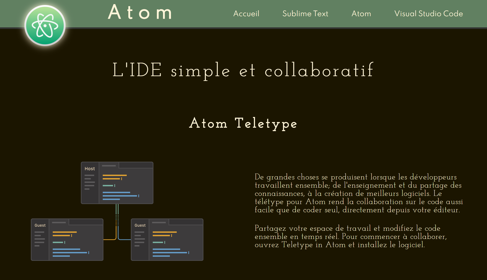

Le projet IDE est l'un des derniers projet en date que j'ai réalisé. J'avais choisi de réaliser ce projet car c'était l'occasion pour moi de décrouvrir des IDE nouveaux que je n'avais pas forcément eu l'occasion d'utiliser jusqu'à présent.
Ce projet était aussi l'occasion pour moi de réaliser un projet qui me demandais de chercher des inspiration graphiques plus variées. C'est aussi un des projet qui m'a permit de décrouvrir des fonctionnalités que je n'avais pas encore utilisé en CSS comme la propriété backdrop-filter.